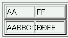
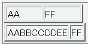

テーブルの自動レイアウト（table-layout: fixed;）を使用している場合でも、セルの内容物によってはセルの幅が変動することがある。
<table border="2" style="table-layout:fixed; width:8em;"> <tr><td>AA</td><td>FF</td></tr> </table> <table border="2" style="table-layout:fixed; width:8em;"> <tr><td>AABBCCDDEE</td><td>FF</td></tr> </table>
| AA | FF |
| AABBCCDDEE | FF |
2つ目のテーブルの1列目のセルには固定レイアウトで決められたセル幅を超える長さの文字列を入れています。
N7.1での表示
Opera6.06での表示